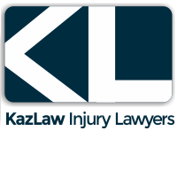
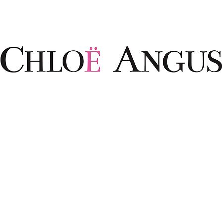

Sponsors
Our sponsors enable us to provide the best care possible. We give all of our sponsors the opportunity to be displayed here, on our social media feeds, and in our facility. Please get in touch with us if you would like to sponsor us as well! All of our clients really appreciate the support!
Kazlaw Personal Injury Lawyers

KazLaw has a depth of experience in all types of injury cases, from the minor to the catastrophic. They protect the right to fair compensation for injuries and financial losses. Kazlaw sponsors a variety of community organizations as a part of their mission. Their office is located in Vancouver and an initial consultation is free!
Chloë Angus Designs

Chloë Angus Design is a small and passionate company that thrives on making women look and feel beautiful. For ten years, the Chloë Angus Design team has been creating high-quality, elegant, chic collections out of the best fabrics available for women of all shapes and sizes. As a sustainable company, they take great pride in producing all of their garments locally in Vancouver.
Chameleon Painting Ltd.

Chameleon Painting Ltd. is a painting company operating in British Columbia since 1994. Over the years, they have successfully completed many commercial, residential, institutional, and light industrial projects. They have sponsored numerous organizations as a way to give back to the community.